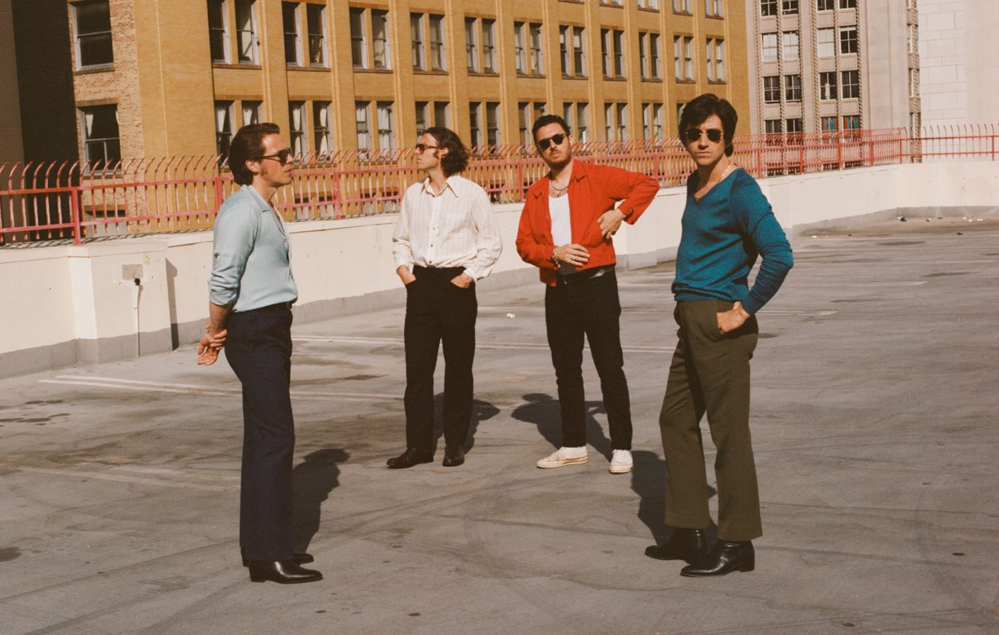

Descubrí The Car
Su séptimo álbum de estudio, está lleno de desvíos, incongruencias y líneas de pensamiento perdidas, unidas por las ondulantes líneas vocales de Turner y una orquesta siempre lista. The Car es un álbum de amor, anhelo y duda, y la ofuscación sirve para reforzar su creencia fundamental de que las verdades más simples son las más difíciles de descubrir.

El álbum muestra a la banda en una etapa totalmente distinta. Menos guitarras al frente, más clima, cine y elegancia. Canciones que se toman su tiempo, letras que juegan con la nostalgia y una atmósfera que te envuelve desde el primer tema. Conseguí The Car y viví el viaje completo.